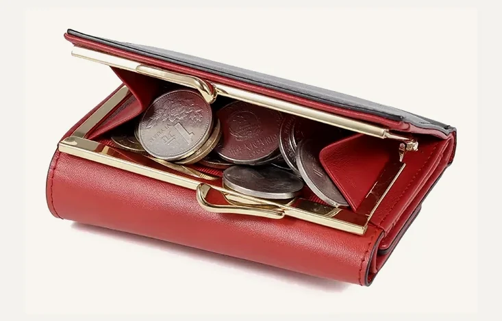
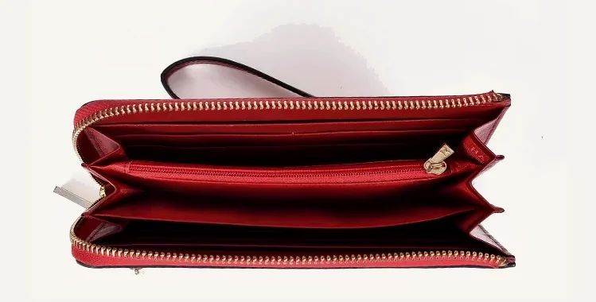

Classic Women's
Zip Wallet
A women's zip wallet reference for private-label sampling, interior structure review and logo customization.
This page is a development reference for OEM and private-label projects, prepared for sampling discussion and customization review.

Reference Details for Buyer Review
These references help start a sampling discussion. Final specifications can be adjusted depending on material, zipper, structure and order details.
Reference Views for Sampling Review
Use these views to review zipper direction, interior structure, slot layout, gusset details and possible logo placement before sample development.


Additional interior, logo-position and packaging photos can be prepared during sample discussion.
Wallet Details Buyers Usually Confirm
The structure can be refined around the buyer's brief, target market and sample feedback.
Customization Options for Private-Label Orders
HASSION supports women's wallet development from first reference through sample confirmation and production planning.
What to Send Us for a Faster Quote
A clear brief helps the team review feasibility, sampling details and production planning more quickly.
- Reference photo or physical sample
- Target size and interior layout
- Zipper or hardware preference
- Logo file or branding requirement
- Leather / color direction
- Estimated order quantity
- Packaging requirement
- Target market or retail price range, if available
Start a Women's Wallet OEM Project
Share your reference, logo file, target quantity and interior structure requirement. Our team can help review sampling details, material options and production feasibility.